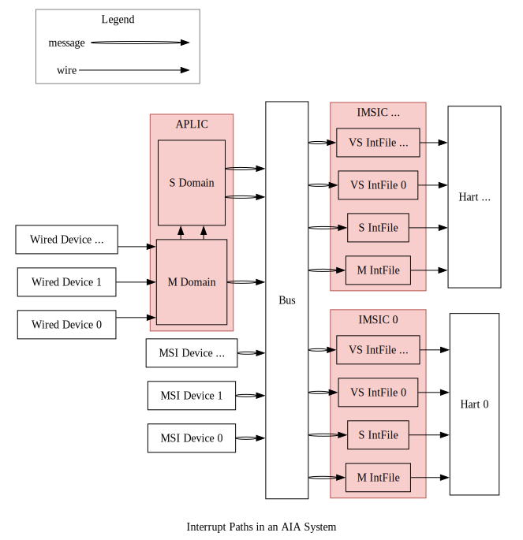
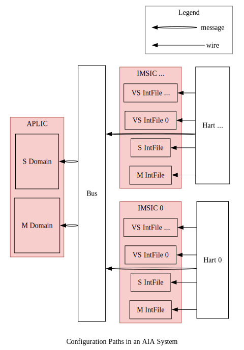
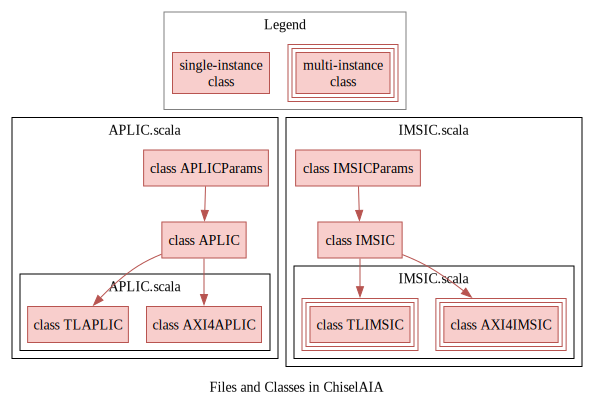
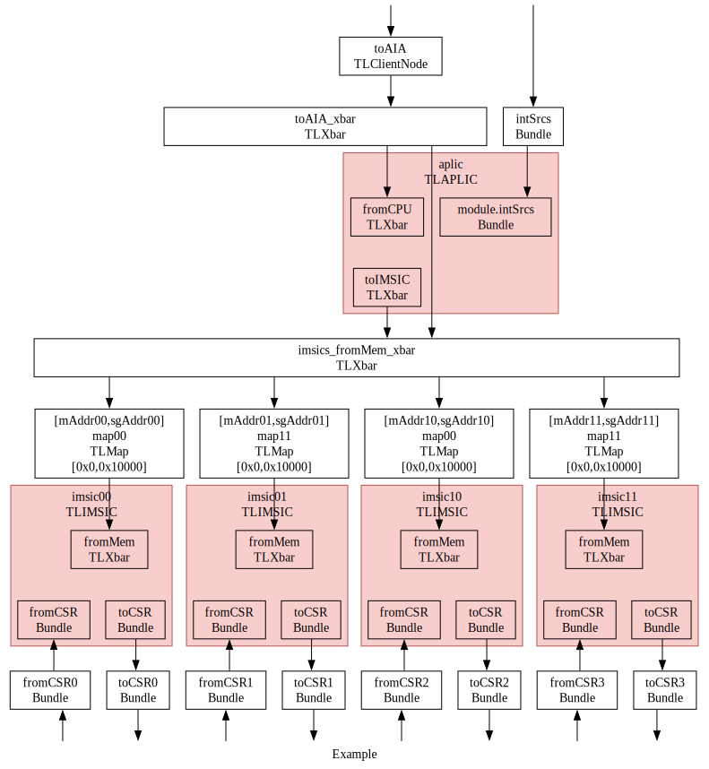

😺ChiselAIA
ChiselAIA的实现遵循RISC-V高级中断架构（Advanced Interrupt Architecture, AIA）规范。 实现与规范之间的任何差异都应视为实现bug。
The implementation of ChiselAIA adheres to the RISC-V Advanced Interrupt Architecture (AIA) Specification. Any discrepancies between the implementation and specification should be treated as implementation bugs.
简介（Introduction）
AIA旨在高效地将外部中断路由到对应的处理器核心（hart）和特权态。 这种路由通过两个中断控制器来完成：
AIA is designed to efficiently route external interrupts to the appropriate harts and privilege levels. This routing is accomplished by two interrupt controllers:
- Incoming Message-Signaled Interrupt Controller (IMSIC)
- Advanced Platform-Level Interrupt Controller (APLIC)
为什么需要两种控制器？ 因为存在两类外部设备：
- 线设备： 通过专用的电信号（边沿或电平）传输中断。 它的特点是实现简单，可扩展性差。 因为每个中断都意味着一根连接到处理器核心的物理线。
- 消息信号中断(Message-signaled-interrupt, MSI)设备： 中断被编码为消息，并通过总线/网络传输。 因为每个中断不需要专用的物理连线，因此MSI与线中断相比，有更好的可扩展性。
Why two types of controllers? There are two types of external devices:
- Wired devices: Interrupts are transmitted via dedicated electronic signals (edge or level), which is simple to implement but faces scalability challenges, as each interrupt requires an physical wire connected to the hart.
- Message-signaled-interrupt (MSI) devices: Interrupts are encoded as messages and transmitted over bus/network, which offers better scalability compared to wired interrupts, as no dedicated physical wires needed for each interrupt.
在 RISC-V AIA 中：
- APLIC负责处理线外部中断。
注意：APLIC可以在两种模式下运行(domaincfg.DM)：
- 直接递送模式：APLIC直接将线中断路由到处理器核心，无需IMSIC参与。
- MSI递送模式：APLIC将线中断转换为MSI并转发给IMSIC。
- 由于MSI更具扩展性，后续讨论默认APLIC采用MSI递送模式。
- IMSIC负责处理MSI。
In RISC-V AIA:
- APLIC handles wired external interrupts.
Note: APLIC can operate in two modes (
domaincfg.DM):- Direct delivery mode: APLIC directly routes wired interrupts to harts without IMSIC involvement.
- MSI delivery mode: APLIC converts wired interrupts into MSIs and forwards them to IMSIC.
- Since MSIs represent the more scalable approach, our subsequent discussion assumes the APLIC working in MSI delivery mode.
- IMSIC handles MSIs.
设备、中断控制器和处理器核心之间的交互主要涉及两种数据通路： 中断通路和配置通路，如下面两张图所示。
The interaction between devices, interrupt controllers, and harts involves two main types of data paths: interrupt paths and configuration paths, shown as the following two figures.
中断通路（Interrupt Paths）
外部中断主要源自外部设备， 尽管在高级使用场景中，内部设备和处理器核心也可以生成“外部”中断 （例如当监管态向虚拟化监管态注入外部中断时）。 接下来的讨论重点关注外部设备生成中断并通过控制器路由到处理器核心的典型情况。
External interrupts primarily originate from external devices, though in advanced scenarios, internal devices and harts can also generate "external" interrupts (e.g. when supervisor level injects external interrupts into virtualized supervisor level). The following discussion focuses on the typical case where external devices generate interrupts that are routed through controllers to harts.

详细的中断通路如下（注：在语言清晰前提下，我们将省略“外部”）：
- 中断来源于线设备或MSI设备：
- 线设备通路：
- 中断被转发到APLIC的中断域。
- 每个域负责管理某一特权态的一组处理器核心的中断。
- 对于大型对称多处理系统，通常两个域就足够了1：
- 一个机器态域，
- 一个监管态域。
- 域遵循层级结构：
- 所线中断首先到达机器态域。
- 根据APLIC的配置，每个中断可以：
- 转换为MSI并通过总线/网络转发给IMSIC，
- 委托给子域，然后遵循类似的处理流程。
- MSI设备通路：
- MSI通过总线/网络直接路由到IMSIC。
- 线设备通路：
- IMSIC处理流程：
- 每个处理器核心通常有其专用的IMSIC。
- 每个IMSIC包含多个中断文件，每个特权态对应一个中断文件2：
- 一个机器态，
- 一个监管态，
- 多个虚拟化监管态。
- 每个中断文件：
- 维护中断状态(待处理、使能等)，
- 根据配置通过线路向处理器核心发出中断信号。
Here are the detailed interrupts paths (note: "external" is omitted where context is clear):
- Interrupts originate from either wired devices or MSI devices:
- Wired device paths:
- Interrupts are directed to APLIC's interrupt domains.
- Each domain manages interrupts for a specific set of harts at a given privilege level.
- For large symmetric multiprocessing systems, typically two domains suffice1:
- One machine-level domain,
- One supervisor-level domain.
- Domains follow a hierarchical structure:
- All wired interrupts fist arrive at the machine-level domain.
- Based on APLIC configuration, each interrup is either:
- Converted to MSI and forwarded to IMSIC via bus/network,
- Delegated to child domains, which then follow similar processing.
- MSI device paths:
- MSIs route directly to IMSIC via bus/network.
- Wired device paths:
- IMSIC processing:
- Each hart typically has its dedicated IMSIC.
- Each IMSIC contains multiple interrupt files, one per privilege level2:
- One machine level,
- One supervisor level,
- Multiple virtualized supervisor levels.
- Each interrupt file:
- Maintains interrup status (pending, enabled, ...),
- Signals hart based on configuration via wire connection.
配置通路（Configuration Paths）
配置流程遵循两个不同的通路：
- IMSIC配置：
- 每个处理器核心只配置其专用的IMSIC，
- 配置通过线路连接进行。
- APLIC配置：
- 所有处理器核心都可以配置APLIC，
- 配置以消息形式通过总线传输。
Configuration flow follows two distinct paths:
- IMSIC configuration:
- Each hart configures only its dedicated IMSIC,
- Configuration occurs through direct wire connection.
- APLIC Configuration:
- All harts can configure APLIC,
- Configuration transmitted via bus as messages.

引用（References）
-
1
The RISC-V Advanced Interrupt Architecture: 4.2 Interrupt domains: Figure 4.
-
2
The RISC-V Advanced Interrupt Architecture: 1.3.2. External interrupts with IMSICs.
📩IMSIC
在典型的RISC-V系统中，每个处理器核心都配有专用的IMSIC。 IMSIC执行三个主要功能:
- 通过内存映射寄存器接收MSI，
- 为其关联的处理器核心生成中断，
- 管理处理器核心所需的AIA控制寄存器。
In a typical RISC-V system, each hart is paired with its dedicated IMSIC. The IMSIC performs three main functions:
- Receives MSIs through memory-mapped registers,
- Generates interrupts for its associated hart,
- Manages AIA CSRs under hart control.
在对称多处理系统中，多个“核-IMSIC”对可以划分成组， 每组包含相同数量的核-IMSIC对。
In symmetric multiprocessing systems, multiple harts-IMSIC pairs can be organized into groups, with each group containing an equal number of pairs.
单个IMSIC的功能（Individual IMSIC Functionality）
IMSIC的输入与输出（IMSIC IO）
IMSIC与其处理器核心紧密耦合， 直接使用线路连接而不是总线/网络进行信息传输。 其关键信号包括:
pendings: 每个中断文件的待处理中断状态。{m,s,vs}topei: 每个特权态中，优先级最高的外部中断号。{m.s,vs}iselect: 每个特权态中，间接访问控制寄存器的地址。{m,s,vs}ireg: 每个特权态中，间接访问控制寄存器所读写的数据。vgein: 虚拟化监管态的选择信号。
The IMSIC is tightly coupled with its hart, directly using wire connection rather than bus/network for information transfer. Key signals include:
pendings: Pending interrupt status for each interrupt file.{m,s,vs}topei: Top external interrupt ID for each privilege level.{m.s,vs}iselect: CSR indirect access address for each privilege level.{m,s,vs}ireg: Read and write data for indirect CSR access for each privilege level.vgein: Virtualized supervisor level selector.

中断文件的输入与输出（Interrupt File IO）
一个IMSIC负责管理其处理器核心中的所有特权态， 包括：一个机器态、一个监管态和多个虚拟化监管态。 由于每个态的行为在一般情况下是相同的，AIA规范将这些功能模块化成独立且可重用的组件，称为中断文件。 每个中断文件与IMSIC交换与特权态无关的信息:
pending: 该中断文件的中断状态。topei: 该中断文件中，优先级最高的外部中断号。iselect: 该中断文件中，间接访问控制寄存器的地址。ireg: 该中断文件中，间接访问控制寄存器所读写的数据。
One IMSIC manages all privilege levels in its hart, including: one machine level, one supervisor level, and multiple virtualized supervisor levels. As the behaviors of each level are identical in general, the AIA specification modularizes these functionalities of each level into independent and reusable components, called interrupt files. Each interrupt file exchanges privilege-agnostic information with IMSIC:
pending: Interrupt pending status for this interrupt file.topei: Top external interrupt ID for this interrupt file.iselect: CSR indirect access address for this interrupt file.ireg: Read and write data for indirect CSR access for this interrupt file.
中断文件的内存映射寄存器（Interrupt File Memory-mapped Registers）
每个中断文件包含一个4KB内存页，用于接收来自总线/网络的消息。 内存页内仅包含一个4B内存映射寄存器:
seteipnum: 位于偏移量0x0处，接收传入的中断号。
Each interrupt file includes a 4KB memory page for receiving messages from bus/network. The memory page including only one 4B memory-mapped register:
seteipnum: Located at offset of 0x0, receiving incoming interrupt IDs.
中断文件内部的寄存器（Interrupt File Internal Registers）
所有上述接口都与中断文件的内部寄存器交互。 关键的内部寄存器包括:
eip[intSrcNum位]: 表示该中断是否待处理。eie[intSrcNum位]: 表示该中断是否使能。
Each interrupt file maintains internal registers that interact with the interfaces above. The key internal registers consist of:
eip[intSrcNum bits]: Whether this interrupt is pending.eie[intSrcNum bits]: Whether this interrupt is enabled.
多个IMSIC的组织形式（Multiple IMSICs Arrangement）
在大型系统中，核-IMSIC对可以分成多组。 下图显示了一个对称的4核-IMSIC系统。 这4对被分为2组，每组包含2个成员(hart-IMSIC对)。
In a large system, hart-IMSIC pairs can be divided into groups. The below figure shows a symmetric 4-hart-IMSIC system. These 4 pairs are divided into 2 groups, and each group contains 2 members (hart-IMSIC pairs).

IMSIC地址字段（IMSIC Address Fields）
为了支持物理内存保护(physical memory protection, PMP)，相同特权态的中断文件位于同一内存区域:
- 机器态内存区域:
- 每个处理器核心对应一个机器态中断文件
- 监管态内存区域:
- 每个处理器核心对应一个监管态中断文件,
- 每个处理器核心对应多个虚拟化监管态中断文件。
To support physical memory protection (PMP), interrupt files of the same privilege level are located in a same memory region:
- Machine-level memory region:
- One machine-level interrupt file per hart
- Supervisor-level memory region:
- One supervisor-level interrupt file per hart,
- Multiple virtualized supervisor-level interrupt files per hart.
因此，每个处理器核心在机器态内存区域只占一页，但在监管态内存区域占多页， 由客户号（监管态为0，虚拟化监管态为1、2、3、...)索引。 需要四个字段来确定一个IMSIC的内存页的地址：
- 特权态：机器态或监管态。
- 组号：该IMSIC所属的组。
- 成员号：该IMSIC所属的成员。
- 客户号：监管态或虚拟化监管态之一。
Thus, each hart has only one page in machine-level memory region and multiple pages in supervisor-level memory region, indexed by a guest ID (0 for supervisor-level, 1,2,3,... for virtualized supervisor level). When determining the memory page address for a given IMSIC, four fields are needed:
- Privilege Level: Machine level or supervisor level.
- Group ID: The group to which this IMSIC belongs.
- Member ID: The member to which this IMSIC belongs.
- Guest ID: Supervisor level or one of the virtualized supervisor levels.

机器态中断文件的地址表达式为：
The formal expression for a machine-level interrupt file address:
$$ \begin{align} mIntFileAddr = & mBaseAddr \\ & + groupID \times 2^{mGroupStrideWidth} \\ & + memberID \times 2^{mMemberStrideWidth} \\ & + guestID \times 4K \end{align} $$
虚拟化监管态中断文件的地址表达式为：
The formal expression for a virtualized supervisor-level interrupt file address:
$$ \begin{align} vsIntFileAddr = & vsBaseAddr \\ & + groupID \times 2^{vsGroupStrideWidth} \\ & + memberID \times 2^{vsMemberStrideWidth} \\ & + guestID \times 4K \end{align} $$
按照AIA规范的要求，vsGroupStrideWidth与mGroupStrideWidth相同。
更多详细信息，请参阅AIA规范1。
As required by the AIA specification, the vsGroupStrideWidth is the same as the mGroupStrideWidth.
For more details, please refer to the AIA specification1.
IMSIC内存区域（IMSIC Memory Regions）
机器和监管态的内存区域如下所示。
The memory regions for machine and supervisor levels are shown as below.

这里展示一个具体的例子。
假设机器态和监管态的内存区域基地址分别为0x6100_0000和0x8290_0000，那么每个中断文件的地址为：
Here is a concrete example.
Assuming the base addresses for machine-level and supervisor-level memory regions are 0x6100_0000 and 0x8290_0000, respectively,
the addresses for each interrupt file are:
- Machine-level interrupt files:
- IMSIC00:
[0x61000000, 0x61000fff] - IMSIC01:
[0x61001000, 0x61001fff] - IMSIC10:
[0x61008000, 0x61008fff] - IMSIC11:
[0x61009000, 0x61009fff]
- IMSIC00:
- Supervisor-level interrupt files:
- IMSIC00:
[0x82900000, 0x82903fff] - IMSIC01:
[0x82904000, 0x82907fff] - IMSIC10:
[0x82908000, 0x8290bfff] - IMSIC11:
[0x8290c000, 0x8290ffff]
- IMSIC00:
The RISC-V Advanced Interrupt Architecture: 3.6. Arrangement of the memory regions of multiple interrupt files
🧶APLIC
在基于消息的中断模式下，APLIC将传统的线中断转换为MSI。 为了提高效率，除非设备在物理上是分开的（例如在不同的芯片组上），单个APLIC实例即可服务所有处理器核心。
In message-based interrupt mode, the APLIC converts traditional wired interrupts into MSIs. For efficiency, a single APLIC instance should serve all harts, unless devices are physically separated (e.g. on different chiplets).
域（Domain）
APLIC实现了分层的域结构来管理不同的特权态:
- 根域（机器态）直接接收所线中断,
- 子域从其父域接收委托的中断,
- 监管态域可以处理监管态和虚拟化监管态中断。
The APLIC implements a hierarchical domain structure to manage different privilege levels:
- The root domain (machine level) directly receives all wired interrupts,
- Child domains receive delegated interrupts from their parent domains,
- A supervisor-level domain can handle both supervisor-level and virtualized supervisor-level interrupts.
对于大型对称多处理系统，通常两个域的配置就足够了：
- 一个机器态域,
- 一个监管态域。
For large symmetric multiprocessing systems, a two-domain configuration typically suffices:
- One machine-level domain,
- One supervisor-level domain.

内部寄存器（Internal Registers）
APLIC在内部寄存器中维护中断状态，包括两个关键寄存器：
ip[intSrcNum位]: 中断待处理状态寄存器,ie[intSrcNum位]: 中断使能控制寄存器。
APLIC maintains interrupt status in internal registers, including two critical registers:
ip[intSrcNum bits]: Interrupt pending status registers,ie[intSrcNum bits]: Interrupt enable control registers.
这些寄存器通过内存映射接口进行控制。 有关详细的寄存器规范，请参阅AIA规范1。
These registers are controlled through memory-mapped interfaces. For detailed register specifications, refer to the AIA specification1.
竞争条件（Race Conditions）
ip寄存器可以被多个来源修改，从而产生潜在的竞争条件。
AIA规范没有规定APLIC在这种竞争条件下的行为。
ChiselAIA实现了一个基于优先级的解决机制。
优先级(从高到低):
- APLIC内部操作：发送MSI后清除
ip， - 线设备操作：通过
intSrc设置ip， - 处理器核心操作：通过内存映射寄存器设置/清除
ip。
The ip registers can be modified by multiple sources, creating potential race conditions.
The AIA specification does not specify the APLIC behaviors under this race condition.
ChiselAIA implements a priority-based resolution mechanism.
Priority levels (highest to lowest):
- APLIC internal operations: Clearing
ipafter sending an MSI, - Wired device operations: Setting
ipviaintSrc, - Hart operations: Setting/Clearing
ipvia memory mapped registers.
高优先级操作会覆盖低优先级操作。
我们推荐通过编程的方式避免竞争条件：
在通过内存映射寄存器修改相应的ip之前，断开线设备。
Higher priority operations override the lower priority ones.
We recommend to avoid race conditions through programming:
detaching the wired device before modifying corresponding ip through memory-mapped registers.
The RISC-V Advanced Interrupt Architecture: 4.5. Memory-mapped control region for an interrupt domain
🧭集成指南（Integration Guide）
本指南介绍如何将ChiselAIA集成到RISC-V系统中。
This guide introduces the integration process of ChiselAIA into a RISC-V system.
概览（Overview）
集成涉及2个Scala文件，共4个Scala类：
APLIC.scala：APLICParams：用于配置APLIC实例的参数类APLIC：APLIC模块的核心逻辑- 每个系统需要一个实例：
TLAPLIC：对APLIC模块的Tilelink协议包装AXI4APLIC：对APLIC模块的AXI4协议包装
IMSIC.scala：IMSICParams：用于配置IMSIC实例的参数类IMSIC：IMSIC模块的核心逻辑- 每个处理器核心需要一个实例：
TLIMSIC：对IMSIC模块的Tilelink协议包装AXI4IMSIC：对IMSIC模块的AXI4协议包装
Integration involves 2 scala files, including 4 scala classes:
APLIC.scala:APLICParams: Parameter classes for configuring APLIC instance.APLIC: The main logic of APLIC module.- Requiring one instance per system:
TLAPLIC: TheAPLICmodule wrapped by Tilelink protocol,AXI4APLIC: TheAPLICmodule wrapped by AXI4 protocol.
IMSIC.scala:IMSICParams: Parameter classes for configuring IMSIC instances.IMSIC: The main logic of IMSIC module.- Requiring one instance per hart:
TLIMSIC: TheIMSICmodule wrapped by Tilelink protocol,AXI4IMSIC: TheIMSICmodule wrapped by AXI4 protocol.

参数（Parameters）
本节概述了APLIC和IMSIC的可配置参数。
虽然提供了默认值，但我们强烈建议根据具体的集成需求，自定义带有👉标记的参数。
其他参数要么是派生的，要么是硬编码的（详情参见Params.scala）。
This section outlines the configurable parameters for APLIC and IMSIC.
While defaul values are provided,
we strongly recommend customizing parameters marked with 👉 to suit your specific integration needs.
Other parameters are either derived or hard-coded, (see Params.scala for details).
命名约定：
Num后缀：某实体的数量，Width后缀：某实体的位宽（通常是log2(实体数量)），Addr后缀：某实体的地址。
Naming conventions:
Numsuffix: Number of the items.Widthsuffix: Bit width of an item (typicallylog2(number of the item)).Addrsuffix: Address of an item.
IMSICParams
package aia
import chisel3._
import chisel3.IO
import chisel3.util._
import freechips.rocketchip.amba.axi4._
import freechips.rocketchip.amba.axi4.AXI4Xbar
import freechips.rocketchip.devices.tilelink._
import freechips.rocketchip.diplomacy._
import freechips.rocketchip.prci.ClockSinkDomain
import freechips.rocketchip.regmapper._
import freechips.rocketchip.tilelink._
import freechips.rocketchip.util._
import org.chipsalliance.cde.config.Parameters
import utility._
object RegMapDV {
def Unwritable = null
def apply(addr: Int, reg: UInt, wfn: UInt => UInt = (x => x)) = (addr, (reg, wfn))
def generate(
default: UInt,
mapping: Map[Int, (UInt, UInt => UInt)],
raddr: UInt,
rvld: Bool,
rdata: UInt,
rvalid: Bool,
waddr: UInt,
wen: Bool,
wdata: UInt,
wmask: UInt,
illegal_priv: Bool,
illegal_op: Bool
): Unit = {
val chiselMapping = mapping.map { case (a, (r, w)) => (a.U, r, w) }
when(rvld) {
rdata := LookupTreeDefault(
raddr,
Cat(default),
chiselMapping.map { case (a, r, _) => (a, r) }
)
rvalid := true.B
}.otherwise {
rdata := 0.U((rdata.getWidth).W)
rvalid := illegal_priv | illegal_op
}
chiselMapping.foreach { case (a, r, w) =>
if (w != null) {
when(wen && waddr === a && !illegal_priv && !illegal_op) {
r := w(MaskData(r, wdata, wmask))
}
}
}
}
def generate(
default: UInt,
mapping: Map[Int, (UInt, UInt => UInt)],
addr: UInt,
rvld: Bool,
rdata: UInt,
rvalid: Bool,
wen: Bool,
wdata: UInt,
wmask: UInt,
illegal_priv: Bool,
illegal_wdata_op: Bool
): Unit = generate(default, mapping, addr, rvld, rdata, rvalid, addr, wen, wdata, wmask, illegal_priv, illegal_wdata_op)
}
// Based on Xiangshan NewCSR
object OpType extends ChiselEnum {
val ILLEGAL = Value(0.U)
val CSRRW = Value(1.U)
val CSRRS = Value(2.U)
val CSRRC = Value(3.U)
}
object PrivType extends ChiselEnum {
val U = Value(0.U)
val S = Value(1.U)
val H = Value(2.U)
val M = Value(3.U)
}
class MSITransBundle(params: IMSICParams) extends Bundle {
val vld_req = Input(Bool()) // request from axireg
val data = Input(UInt(params.MSI_INFO_WIDTH.W))
val vld_ack = Output(Bool()) // ack for axireg from imsic. which indicates imsic can work actively.
}
class ForCVMBundle extends Bundle {
val cmode = Input(Bool()) // add port: cpu mode is tee or ree
val notice_pending =
Output(Bool()) // add port: interrupt pending of ree when cmode is tee,else interrupt pending of tee.
}
class AddrBundle(params: IMSICParams) extends Bundle {
val valid = Bool() // 表示 addr 是否有效
val bits = new Bundle {
val addr = UInt(params.iselectWidth.W) // 存储实际地址值
val virt = Bool()
val priv = PrivType()
}
}
class CSRToIMSICBundle(params: IMSICParams) extends Bundle {
val addr = new AddrBundle(params)
val vgein = UInt(params.vgeinWidth.W)
val wdata = ValidIO(new Bundle {
val op = OpType()
val data = UInt(params.xlen.W)
})
val claims = Vec(params.privNum, Bool())
}
class IMSICToCSRBundle(params: IMSICParams) extends Bundle {
val rdata = ValidIO(UInt(params.xlen.W))
val illegal = Bool()
val pendings = UInt(params.intFilesNum.W)
val topeis = Vec(params.privNum, UInt(32.W))
}
case class IMSICParams(
// MC IMSIC中断源数量的对数，默认值8表示IMSIC支持最多512（2^9）个中断源
// MC （Logarithm of number of interrupt sources to IMSIC.
// MC The default 9 means IMSIC support at most 256 (2^9) interrupt sources）:
// MC{visible}
imsicIntSrcWidth: Int = 9,
// MC 👉 本IMSIC的机器态中断文件的地址（Address of machine-level interrupt files for this IMSIC）：
mAddr: Long = 0x00000L,
// MC 👉 本IMSIC的监管态和客户态中断文件的地址（Addr for supervisor-level and guest-level interrupt files for this IMSIC）:
sgAddr: Long = 0x10000L,
// MC 👉 客户中断文件的数量（Number of guest interrupt files）:
geilen: Int = 7,
// MC vgein信号的位宽（The width of the vgein signal）:
vgeinWidth: Int = 6,
// MC iselect信号的位宽(The width of iselect signal):
iselectWidth: Int = 12,
EnableImsicAsyncBridge: Boolean = true,
HasTEEIMSIC: Boolean = false,
HartIDBits: Int = 9
// MC{hide}
) {
lazy val xlen: Int = 64 // currently only support xlen = 64
lazy val xlenWidth = log2Ceil(xlen)
require(
imsicIntSrcWidth <= 11 && imsicIntSrcWidth >= 6,
f"imsicIntSrcWidth=${imsicIntSrcWidth}, must not greater than log2(2048)=11, as there are at most 2048 eip/eie bits" +
"must not be less than log2(64)=6, as there must be at least 64 eip/eie bits"
)
lazy val privNum: Int = 3 // number of privilege modes: machine, supervisor, virtualized supervisor
lazy val intFilesNum: Int = 2 + geilen // number of interrupt files, m, s, vs0, vs1, ...
lazy val eixNum: Int = pow2(imsicIntSrcWidth).toInt / xlen // number of eip/eie registers
lazy val intFileMemWidth: Int = 12 // interrupt file memory region width: 12-bit width => 4KB size
lazy val tee_mshift: Int = HartIDBits + intFileMemWidth // 9: max 512 hart, bit10 is 1, tee imsic accessed.
lazy val tee_sshift: Int = HartIDBits + log2Ceil(1+ geilen) + intFileMemWidth // 9: max 512 hart, bit10 is 1, tee imsic accessed.
lazy val tee_mAddr: Long = mAddr + (1L << tee_mshift)
lazy val tee_sgAddr: Long = sgAddr + (1L << tee_sshift)
require(vgeinWidth >= log2Ceil(geilen))
require(
iselectWidth >= 8,
f"iselectWidth=${iselectWidth} needs to be able to cover addr [0x70, 0xFF], that is from CSR eidelivery to CSR eie63"
)
lazy val INTP_FILE_WIDTH = log2Ceil(intFilesNum)
lazy val MSI_INFO_WIDTH = imsicIntSrcWidth + INTP_FILE_WIDTH
}
class IMSIC(
params: IMSICParams,
beatBytes: Int = 4
)(implicit p: Parameters) extends Module {
println(f"IMSICParams.geilen: ${params.geilen}%d")
class IMSICGateWay extends Module {
// === io port define ===
val msiio = IO(new MSITransBundle(params))
val msi_data_o = IO(Output(UInt(params.imsicIntSrcWidth.W)))
val msi_valid_o = IO(Output(UInt(params.intFilesNum.W)))
// === main body ===
val msi_in = Wire(UInt(params.MSI_INFO_WIDTH.W))
msi_in := msiio.data
val msi_vld_req_cpu = WireInit(false.B)
when(params.EnableImsicAsyncBridge.B) {
msi_vld_req_cpu := AsyncResetSynchronizerShiftReg(msiio.vld_req, 3, 0)
}.otherwise {
msi_vld_req_cpu := msiio.vld_req
}
val msi_vld_ack_cpu = RegInit(false.B)
when(msi_vld_req_cpu)(
msi_vld_ack_cpu := true.B
).otherwise(
msi_vld_ack_cpu := false.B
)
// generate the msi_vld_ack,to handle with the input msi request.
msiio.vld_ack := msi_vld_ack_cpu
val msi_vld_ris_cpu = msi_vld_req_cpu & (~msi_vld_ack_cpu) // rising of msi_vld_req
val msi_data_catch = RegInit(0.U(params.imsicIntSrcWidth.W))
val msi_intf_valids = RegInit(0.U(params.intFilesNum.W))
msi_data_o := msi_data_catch(params.imsicIntSrcWidth - 1, 0)
msi_valid_o := msi_intf_valids // multi-bis switch vector
when(msi_vld_ris_cpu) {
msi_data_catch := msi_in(params.imsicIntSrcWidth - 1, 0)
msi_intf_valids := 1.U << msi_in(params.MSI_INFO_WIDTH - 1,params.imsicIntSrcWidth)
}.otherwise {
msi_intf_valids := 0.U
}
}
class IntFile extends Module {
override def desiredName = "IntFile"
val fromCSR = IO(Input(new Bundle {
val seteipnum = ValidIO(UInt(params.imsicIntSrcWidth.W))
val addr = ValidIO(UInt(params.iselectWidth.W))
val virt = Bool()
val priv = PrivType()
val vgein = UInt(params.vgeinWidth.W)
val wdata = ValidIO(new Bundle {
val op = OpType()
val data = UInt(params.xlen.W)
})
val claim = Bool()
}))
val toCSR = IO(Output(new Bundle {
val rdata = ValidIO(UInt(params.xlen.W))
val illegal = Bool()
val pending = Bool()
val topei = UInt(params.imsicIntSrcWidth.W)
}))
val illegal_io = IO(new Bundle {
val illegal_priv = Input(Bool())
})
val illegal_priv = illegal_io.illegal_priv
/// indirect CSRs
val eidelivery = RegInit(0.U(params.xlen.W))
val eithreshold = RegInit(0.U(params.xlen.W))
val eips = RegInit(VecInit.fill(params.eixNum)(0.U(params.xlen.W)))
val eies = RegInit(VecInit.fill(params.eixNum)(0.U(params.xlen.W)))
val illegal_wdata_op = WireDefault(false.B)
locally { // scope for xiselect CSR reg map
val wdata = WireDefault(0.U(params.xlen.W))
val wmask = WireDefault(0.U(params.xlen.W))
when(fromCSR.wdata.valid) {
switch(fromCSR.wdata.bits.op) {
// is(OpType.ILLEGAL) {
// illegal_wdata_op := true.B
// }
is(OpType.CSRRW) {
wdata := fromCSR.wdata.bits.data
wmask := Fill(params.xlen, 1.U)
}
is(OpType.CSRRS) {
wdata := Fill(params.xlen, 1.U)
wmask := fromCSR.wdata.bits.data
}
is(OpType.CSRRC) {
wdata := 0.U
wmask := fromCSR.wdata.bits.data
}
}
}
def bit0ReadOnlyZero(x: UInt): UInt = x & ~1.U(x.getWidth.W)
def fixEIDelivery(x: UInt): UInt = x & 1.U
RegMapDV.generate(
0.U,
Map(
RegMapDV(0x70, eidelivery, fixEIDelivery),
RegMapDV(0x72, eithreshold),
RegMapDV(0x80, eips(0), bit0ReadOnlyZero),
RegMapDV(0xc0, eies(0), bit0ReadOnlyZero)
) ++ eips.drop(1).zipWithIndex.map { case (eip: UInt, i: Int) =>
RegMapDV(0x82 + i * 2, eip)
} ++ eies.drop(1).zipWithIndex.map { case (eie: UInt, i: Int) =>
RegMapDV(0xc2 + i * 2, eie)
},
/*raddr*/ fromCSR.addr.bits,
/*rvld */ fromCSR.addr.valid,
/*rdata*/ toCSR.rdata.bits,
/*rvalid*/ toCSR.rdata.valid,
/*waddr*/ fromCSR.addr.bits,
/*wen */ fromCSR.wdata.valid,
/*wdata*/ wdata,
/*wmask*/ wmask,
/*priv*/ illegal_priv,
/*op*/ illegal_wdata_op
)
val illegal_csr = WireDefault(false.B)
when(fromCSR.addr.bits >= 0x80.U && fromCSR.addr.bits <= 0xFF.U &&
fromCSR.addr.bits(0) === 1.U) {
illegal_csr := true.B
}
toCSR.illegal := illegal_csr
}
locally {
val index = fromCSR.seteipnum.bits(params.imsicIntSrcWidth - 1, params.xlenWidth)
val offset = fromCSR.seteipnum.bits(params.xlenWidth - 1, 0)
when(fromCSR.seteipnum.valid) {
// set eips bit
eips(index) := eips(index) | UIntToOH(offset)
}
}
locally { // scope for xtopei
// The ":+ true.B" trick explain:
// Append true.B to handle the cornor case, where all bits in eip and eie are disabled.
// If do not append true.B, then we need to check whether the eip & eie are empty,
// otherwise, the returned topei will become the max index, that is 2^intSrcWidth-1
// Noted: the support max interrupt sources number = 2^intSrcWidth
// [0, 2^intSrcWidth-1] :+ 2^intSrcWidth
val eipBools = Cat(eips.reverse).asBools :+ true.B
val eieBools = Cat(eies.reverse).asBools :+ true.B
def xtopei_filter(xeidelivery: UInt, xeithreshold: UInt, xtopei: UInt): UInt = {
val tmp_xtopei = Mux(xeidelivery(params.xlen - 1, 1) === 0.U, Mux(xeidelivery(0), xtopei, 0.U) , 0.U)
// {
// all interrupts are enabled, when eithreshold == 1;
// interrupts, when i < eithreshold, are enabled;
// } <=> interrupts, when i <= (eithreshold -1), are enabled
Mux(tmp_xtopei <= (xeithreshold - 1.U), tmp_xtopei, 0.U)
}
toCSR.topei := xtopei_filter(
eidelivery,
eithreshold,
ParallelPriorityMux(
(eipBools zip eieBools).zipWithIndex.map {
case ((p: Bool, e: Bool), i: Int) => (p & e, i.U)
}
)
)
} // end of scope for xtopei
toCSR.pending := toCSR.topei =/= 0.U
when(fromCSR.claim) {
val index = toCSR.topei(params.imsicIntSrcWidth - 1, params.xlenWidth)
val offset = toCSR.topei(params.xlenWidth - 1, 0)
// clear the pending bit indexed by xtopei in xeip
eips(index) := eips(index) & ~UIntToOH(offset)
}
}
val toCSR = IO(Output(new IMSICToCSRBundle(params)))
val fromCSR = IO(Input(new CSRToIMSICBundle(params)))
val msiio = IO(new MSITransBundle(params))
val illegal_priv = WireInit(false.B)
private val intFilesSelOH_r = WireDefault(0.U(params.intFilesNum.W))
private val intFilesSelOH_w = WireDefault(0.U(params.intFilesNum.W))
locally {
when (fromCSR.addr.valid)
{
when(fromCSR.addr.bits.virt === false.B )
{
when(((fromCSR.addr.bits.priv.asUInt === 3.U) || (fromCSR.addr.bits.priv.asUInt === 1.U))/* && fromCSR.vgein === 0.U*/){
illegal_priv := false.B
}.otherwise{
illegal_priv := true.B
}
}.otherwise{
when(fromCSR.addr.bits.priv.asUInt === 1.U && (fromCSR.vgein >= 1.U) && (fromCSR.vgein < (params.geilen + 1).U((params.vgeinWidth+1).W)))
{
illegal_priv := false.B
}.otherwise{
illegal_priv := true.B
}
}
}
when (fromCSR.addr.valid && !illegal_priv) // read
{
val pv = Cat(fromCSR.addr.bits.priv.asUInt, fromCSR.addr.bits.virt)
when(pv === Cat(PrivType.M.asUInt, false.B)){intFilesSelOH_r := UIntToOH(0.U)}
.elsewhen(pv === Cat(PrivType.S.asUInt, false.B)){intFilesSelOH_r := UIntToOH(1.U)}
.elsewhen(pv === Cat(PrivType.S.asUInt, true.B)){intFilesSelOH_r := UIntToOH(1.U((fromCSR.vgein.getWidth+1).W)
+ fromCSR.vgein.pad(params.vgeinWidth+1))
}
}
when (fromCSR.addr.valid && fromCSR.wdata.valid && !(fromCSR.wdata.bits.op.asUInt === 0.U) && !illegal_priv) // write
{
val pv = Cat(fromCSR.addr.bits.priv.asUInt, fromCSR.addr.bits.virt)
when(pv === Cat(PrivType.M.asUInt, false.B)){intFilesSelOH_w := UIntToOH(0.U)}
.elsewhen(pv === Cat(PrivType.S.asUInt, false.B)){intFilesSelOH_w := UIntToOH(1.U)}
.elsewhen(pv === Cat(PrivType.S.asUInt, true.B)){intFilesSelOH_w := UIntToOH(1.U((fromCSR.vgein.getWidth+1).W)
+ fromCSR.vgein.pad(params.vgeinWidth+1))
}
}
}
private val topeis_forEachIntFiles = Wire(Vec(params.intFilesNum, UInt(params.imsicIntSrcWidth.W)))
private val illegals_forEachIntFiles = Wire(Vec(params.intFilesNum, Bool()))
// instance and connect IMSICGateWay.
val imsicGateWay = Module(new IMSICGateWay)
imsicGateWay.msiio <> msiio
val pendings = Wire(Vec(params.intFilesNum,Bool()))
val vec_rdata = Wire(Vec(params.intFilesNum, ValidIO(UInt(params.xlen.W))))
Seq(1, 1 + params.geilen).zipWithIndex.map {
case (intFilesNum: Int, i: Int) => {
// j: index for S intFile: S, G1, G2, ...
val maps = (0 until intFilesNum).map { j =>
val flati = i + j
val pi = if (flati > 2) 2 else flati // index for privileges: M, S, VS.
def sel_addr(old: AddrBundle): AddrBundle = {
val new_ = Wire(new AddrBundle(params))
new_.valid := old.valid & intFilesSelOH_r(flati)
new_.bits.addr := old.bits.addr
new_.bits.virt := old.bits.virt
new_.bits.priv := old.bits.priv
new_
}
def sel_wdata[T <: Data](old: Valid[T]): Valid[T] = {
val new_ = Wire(Valid(chiselTypeOf(old.bits)))
new_.bits := old.bits
new_.valid := old.valid & intFilesSelOH_w(flati)
new_
}
val intFile = Module(new IntFile)
// Preventing overflow
when (flati.U((params.vgeinWidth + 1).W) === fromCSR.vgein.pad(params.vgeinWidth + 1)+1.U) {
intFile.fromCSR.vgein := fromCSR.vgein
} .otherwise {
intFile.fromCSR.vgein := 0.U
}
val intfile_rdata_d = RegNext(intFile.toCSR.rdata)
val msi_valid_delayed = RegNext(imsicGateWay.msi_valid_o(flati), false.B)
intFile.fromCSR.seteipnum.bits := imsicGateWay.msi_data_o
intFile.fromCSR.seteipnum.valid := imsicGateWay.msi_valid_o(flati) | msi_valid_delayed
intFile.fromCSR.addr.valid := sel_addr(fromCSR.addr).valid
intFile.fromCSR.addr.bits := sel_addr(fromCSR.addr).bits.addr
intFile.fromCSR.virt := sel_addr(fromCSR.addr).bits.virt
intFile.fromCSR.priv := sel_addr(fromCSR.addr).bits.priv
intFile.fromCSR.wdata := sel_wdata(fromCSR.wdata)
intFile.fromCSR.claim := fromCSR.claims(pi)
intFile.illegal_io.illegal_priv := illegal_priv
vec_rdata(flati) := intfile_rdata_d
pendings(flati) := intFile.toCSR.pending
topeis_forEachIntFiles(flati) := intFile.toCSR.topei
illegals_forEachIntFiles(flati) := intFile.toCSR.illegal
}
}
}
toCSR.rdata.valid := vec_rdata.map(_.valid).reduce(_|_)
toCSR.rdata.bits := vec_rdata.map(_.bits).reduce(_|_)
toCSR.pendings := (pendings.zipWithIndex.map{case (p,i) => p << i.U}).reduce(_ | _) //vector -> multi-bit
locally {
// Format of *topei:
// * bits 26:16 Interrupt identity
// * bits 10:0 Interrupt priority (same as identity)
// * All other bit positions are zeros.
// For detailed explainations of these memory region arguments,
// please refer to the manual *The RISC-V Advanced Interrupt Architeture*: 3.9. Top external interrupt CSRs
def wrap(topei: UInt): UInt = {
val zeros = 0.U((16 - params.imsicIntSrcWidth).W)
Cat(zeros, topei, zeros, topei)
}
val pv = Cat(fromCSR.addr.bits.priv.asUInt, fromCSR.addr.bits.virt)
toCSR.topeis(0) := wrap(topeis_forEachIntFiles(0)) // m
toCSR.topeis(1) := wrap(topeis_forEachIntFiles(1)) // s
toCSR.topeis(2) := wrap(ParallelMux(
UIntToOH(fromCSR.vgein - 1.U, params.geilen).asBools,
topeis_forEachIntFiles.drop(2)
)) // vs
}
val toCSR_illegal_d = RegNext((fromCSR.addr.valid | fromCSR.wdata.valid) & Seq(
illegals_forEachIntFiles.reduce(_ | _),
(fromCSR.wdata.valid && fromCSR.wdata.bits.op.asUInt === 0.U),
illegal_priv
).reduce(_ | _))
toCSR.illegal := toCSR_illegal_d
}
//define IMSIC_WRAP: instance one imsic when HasCVMExtention is supported, else instance two imsic modules.
class IMSIC_WRAP(
params: IMSICParams,
beatBytes: Int = 4
)(implicit p: Parameters) extends Module {
// define the ports
val toCSR = IO(Output(new IMSICToCSRBundle(params)))
val fromCSR = IO(Input(new CSRToIMSICBundle(params)))
val msiio = IO(new MSITransBundle(params))
// define additional ports when HasCVMExtention is supported.
val sec = if (params.HasTEEIMSIC) Some(IO(new ForCVMBundle()))
else None // include cmode input port,and o_notice_pending output port.
val teemsiio = if (params.HasTEEIMSIC) Some(IO(new MSITransBundle(params))) else None
// instance module,and body logic
private val imsic = Module(new IMSIC(params, beatBytes))
imsic.fromCSR := fromCSR
toCSR := imsic.toCSR
imsic.msiio <> msiio
// define additional logic for sec extention
// .foreach logic only happens when sec is not none.
sec.foreach { secIO =>
// get the sec.mode, connect sec.o_notice_pending to top.
val cmode = Wire(Bool())
val notice_pending = Wire(Bool())
cmode := secIO.cmode
secIO.notice_pending := notice_pending
// instance tee imsic module.
val teeimsic = Module(new IMSIC(params, beatBytes))
teemsiio.foreach(teemsiio => teeimsic.msiio <> teemsiio)
toCSR.rdata := Mux(cmode, teeimsic.toCSR.rdata, imsic.toCSR.rdata) // toCSR needs to the selected depending cmode.
toCSR.illegal := Mux(cmode, teeimsic.toCSR.illegal, imsic.toCSR.illegal)
val s_pendings = Mux(cmode, teeimsic.toCSR.pendings(params.intFilesNum-1,1), imsic.toCSR.pendings(params.intFilesNum-1,1))
val m_pendings = imsic.toCSR.pendings(0) // machine mode only from imsic.
toCSR.pendings := Cat(s_pendings,m_pendings)
// toCSR.pendings := VecInit((0 until params.intFilesNum).map(i => pendings(i))) // uint->vector
toCSR.topeis := Mux(cmode, teeimsic.toCSR.topeis, imsic.toCSR.topeis)
toCSR.topeis(0) := imsic.toCSR.topeis(0) // machine mode only from imsic.
// to get the o_notice_pending, excluding the machine interrupt
// val s_orpend_ree = imsic.toCSR.pendings.slice(1, params.intFilesNum) // extract the | of vector(1,N-1)
// val s_orpend_tee = teeimsic.toCSR.pendings.slice(1, params.intFilesNum)
// notice_pending := Mux(cmode, s_orpend_ree.reduce(_ | _), s_orpend_tee.reduce(_ | _))
val s_orpend_ree = imsic.toCSR.pendings(params.intFilesNum-1,1) // extract the | of vector(1,N-1)
val s_orpend_tee = teeimsic.toCSR.pendings(params.intFilesNum-1,1) //bit(params.intFilesNum-1:1)
notice_pending := Mux(cmode, s_orpend_ree.orR, s_orpend_tee.orR)
teeimsic.fromCSR := fromCSR
teeimsic.fromCSR.addr.valid := cmode & fromCSR.addr.valid // cmode=1,controls tee csr access to interrupt file indirectly
teeimsic.fromCSR.wdata.valid := cmode & fromCSR.wdata.valid
teeimsic.fromCSR.claims(0) := false.B // machine interrupts are inactive for tee imsic.
for (i <- 1 until params.privNum) {
teeimsic.fromCSR.claims(i) := cmode & fromCSR.claims(i)
}
imsic.fromCSR.addr.valid := (cmode === false.B) & fromCSR.addr.valid // cmode=1,controls tee csr access to interrupt file indirectly
imsic.fromCSR.wdata.valid := (cmode === false.B) & fromCSR.wdata.valid
imsic.fromCSR.claims(0) := fromCSR.claims(0) // machine interrupts are inactive for tee imsic.
for (i <- 1 until params.privNum) {
imsic.fromCSR.claims(i) := (cmode === false.B) & fromCSR.claims(i)
}
}
}
//generate TLIMSIC top module:including TLRegIMSIC_WRAP and IMSIC_WRAP
class TLIMSIC(
params: IMSICParams,
beatBytes: Int = 4
// asyncQueueParams: AsyncQueueParams
)(implicit p: Parameters) extends LazyModule with HasIMSICParameters {
val axireg = LazyModule(new TLRegIMSIC_WRAP(IMSICParams(HasTEEIMSIC = GHasTEEIMSIC), beatBytes))
lazy val module = new Imp
class Imp extends LazyModuleImp(this) {
val toCSR = IO(Output(new IMSICToCSRBundle(params)))
val fromCSR = IO(Input(new CSRToIMSICBundle(params)))
private val imsic = Module(new IMSIC_WRAP(IMSICParams(HasTEEIMSIC = GHasTEEIMSIC), beatBytes))
toCSR := imsic.toCSR
imsic.fromCSR := fromCSR
axireg.module.msiio <> imsic.msiio // msi_req/msi_ack interconnect
// define additional ports for cvm extention
val io_sec = if (GHasTEEIMSIC) Some(IO(new ForCVMBundle()))
else None // include cmode input port,and o_notice_pending output port.
/* code on when imsic has two clock domains.*/
// --- define soc_clock for imsic bus logic ***//
val soc_clock = IO(Input(Clock()))
val soc_reset = IO(Input(Reset()))
axireg.module.clock := soc_clock
axireg.module.reset := soc_reset
imsic.clock := clock
imsic.reset := reset
axireg.module.msiio <> imsic.msiio // msi_req/msi_ack interconnect
// code will be compiled only when io_sec is not None.
io_sec.foreach(iosec => imsic.sec.foreach(imsicsec => imsicsec <> iosec))
// code will be compiled only when tee_axireg is not None.
axireg.module.teemsiio.foreach(tee_msi_trans => imsic.teemsiio.foreach(teemsiio => tee_msi_trans <> teemsiio))
}
}
class AXI4IMSIC(
params: IMSICParams,
beatBytes: Int = 4
)(implicit p: Parameters) extends LazyModule with HasIMSICParameters {
val axireg = LazyModule(new AXIRegIMSIC_WRAP(IMSICParams(HasTEEIMSIC = GHasTEEIMSIC), beatBytes))
lazy val module = new Imp
class Imp extends LazyModuleImp(this) {
val toCSR = IO(Output(new IMSICToCSRBundle(params)))
val fromCSR = IO(Input(new CSRToIMSICBundle(params)))
private val imsic = Module(new IMSIC_WRAP(IMSICParams(HasTEEIMSIC = GHasTEEIMSIC), beatBytes))
toCSR := imsic.toCSR
imsic.fromCSR := fromCSR
axireg.module.msiio <> imsic.msiio // msi_req/msi_ack interconnect
// define additional ports for cvm extention
val io_sec = if (GHasTEEIMSIC) Some(IO(new ForCVMBundle()))
else None // include cmode input port,and o_notice_pending output port.
/* code on when imsic has two clock domains.*/
// --- define soc_clock for imsic bus logic ***//
val soc_clock = IO(Input(Clock()))
val soc_reset = IO(Input(Reset()))
axireg.module.clock := soc_clock
axireg.module.reset := soc_reset
imsic.clock := clock
imsic.reset := reset
// code will be compiled only when io_sec is not None.
io_sec.foreach(iosec => imsic.sec.foreach(imsicsec => imsicsec <> iosec))
// code will be compiled only when tee_axireg is not None.
axireg.module.teemsiio.foreach(tee_msi_trans => imsic.teemsiio.foreach(teemsiio => tee_msi_trans <> teemsiio))
}
}
// code below is for SEC IMSIC spec
//generate TLRegIMSIC_WRAP for IMSIC, when HasCVMExtention is supported, IMSIC is instantiated by two times,else only one
class TLRegIMSIC_WRAP(
params: IMSICParams,
beatBytes: Int = 4,
seperateBus: Boolean = false
)(implicit p: Parameters) extends LazyModule {
// def IMSIC access TLXbar
// require((params.HasTEEIMSIC && seperateBus) == false,
// f"both seperateTLBus and HasTEEIMSIC are true !!")
require(seperateBus == false,
f"seperateTLBus is true inside TLRegIMSIC_WRAP !!")
val axireg = LazyModule(new TLRegIMSIC(params, beatBytes)(Parameters.empty))
val tee_axireg =
if (params.HasTEEIMSIC) Some(LazyModule(new TLRegIMSIC(params, beatBytes)(Parameters.empty))) else None
val imsic_xbar1to2 = TLXbar()
private val ree_sNode = TLManagerNode(Seq(TLSlavePortParameters.v1(
managers = Seq(TLSlaveParameters.v1(
address = Seq(
AddressSet(params.mAddr, pow2(params.intFileMemWidth) - 1),
AddressSet(params.sgAddr, pow2(params.intFileMemWidth) * pow2(log2Ceil(1 + params.geilen)) - 1)),
regionType = RegionType.UNCACHED,
executable = false,
supportsGet = TransferSizes(1, beatBytes),
supportsPutPartial = TransferSizes(1, beatBytes),
supportsPutFull = TransferSizes(1, beatBytes),
// fifoId = Some(0)
)),
beatBytes = beatBytes
)))
private val tee_sNode = Option.when(params.HasTEEIMSIC)(TLManagerNode(Seq(TLSlavePortParameters.v1(
managers = Seq(TLSlaveParameters.v1(
address = Seq(
AddressSet(params.tee_mAddr, pow2(params.intFileMemWidth) - 1),
AddressSet(params.tee_sgAddr, pow2(params.intFileMemWidth) * pow2(log2Ceil(1 + params.geilen)) - 1)),
regionType = RegionType.UNCACHED,
executable = false,
supportsGet = TransferSizes(1, beatBytes),
supportsPutPartial = TransferSizes(1, beatBytes),
supportsPutFull = TransferSizes(1, beatBytes),
// fifoId = Some(0)
)),
beatBytes = beatBytes
))))
ree_sNode := imsic_xbar1to2
tee_sNode.foreach (_ := imsic_xbar1to2)
val ree_mNode = TLClientNode(
Seq(TLMasterPortParameters.v1(
Seq(TLMasterParameters.v1("s_tl_", IdRange(0, 65536)))
)))
val tee_mNode = Option.when(params.HasTEEIMSIC)(
TLClientNode(
Seq(TLMasterPortParameters.v1(
Seq(TLMasterParameters.v1("s_tl_", IdRange(0, 65536)))
))))
axireg.fromMem.head := ree_mNode
tee_mNode.foreach(tee_axireg.get.fromMem.head := _)
lazy val module = new TLRegIMSICImp(this)
class TLRegIMSICImp(outer: LazyModule) extends LazyModuleImp(outer) {
val msiio = IO(Flipped(new MSITransBundle(params)))
msiio <> axireg.module.msiio
val teemsiio = if (params.HasTEEIMSIC) Some(IO(Flipped(new MSITransBundle(params))))
else None // backpressure signal for axi4bus, from imsic working on cpu clock
// code below will be compiled only when teeio is not none.
teemsiio.foreach(teemsiio => tee_axireg.foreach(tee_axireg => teemsiio <> tee_axireg.module.msiio))
ree_mNode.out.head._1 <> ree_sNode.in.head._1
tee_mNode.foreach(_.out.head._1 <> tee_sNode.get.in.head._1)
}
}
//generate AXIRegIMSIC_WRAP for IMSIC, when HasCVMExtention is supported, IMSIC is instantiated by two times,else only one
class AXIRegIMSIC_WRAP(
params: IMSICParams,
beatBytes: Int = 4,
seperateBus: Boolean = false
)(implicit p: Parameters) extends LazyModule {
// def IMSIC access AXI4Xbar
val imsic_xbar1to2 = AXI4Xbar()
val ree_sNode = {
AXI4SlaveNode(Seq(AXI4SlavePortParameters(
slaves = Seq(AXI4SlaveParameters(
address = Seq(
AddressSet(params.mAddr, pow2(params.intFileMemWidth) - 1),
AddressSet(params.sgAddr, pow2(params.intFileMemWidth) * pow2(log2Ceil(1 + params.geilen)) - 1)),
supportsWrite = TransferSizes(1, beatBytes),
supportsRead = TransferSizes(1, beatBytes)
)),
beatBytes = beatBytes
)))
}
val tee_sNode = Option.when(params.HasTEEIMSIC) {
AXI4SlaveNode(Seq(AXI4SlavePortParameters(
slaves = Seq(AXI4SlaveParameters(
address = Seq(
AddressSet(params.tee_mAddr, pow2(params.intFileMemWidth) - 1),
AddressSet(params.tee_sgAddr, pow2(params.intFileMemWidth) * pow2(log2Ceil(1 + params.geilen)) - 1)),
supportsWrite = TransferSizes(1, beatBytes),
supportsRead = TransferSizes(1, beatBytes)
)),
beatBytes = beatBytes
)))
}
ree_sNode := imsic_xbar1to2
tee_sNode.foreach(_ := imsic_xbar1to2)
val axireg = LazyModule(new AXIRegIMSIC(params, beatBytes)(Parameters.empty))
// val tee_axireg = if (params.HasTEEIMSIC) Some(LazyModule(new AXIRegIMSIC(IMSICParams(teemode = true), beatBytes)(Parameters.empty))) else None
val tee_axireg =
if (params.HasTEEIMSIC) Some(LazyModule(new AXIRegIMSIC(params, beatBytes)(Parameters.empty))) else None
val ree_mNode = AXI4MasterNode(Seq(AXI4MasterPortParameters(
Seq(AXI4MasterParameters(
name = "s_axi_",
id = IdRange(0, 65536)
))
)))
val tee_mNode = Option.when(params.HasTEEIMSIC) {
AXI4MasterNode(Seq(AXI4MasterPortParameters(
Seq(AXI4MasterParameters(
name = "s_axi_",
id = IdRange(0, 65536)
))
)))
}
axireg.axi4tolite.head.node := ree_mNode
tee_axireg.foreach(_.axi4tolite.head.node := tee_mNode.get)
lazy val module = new AXIRegIMSICImp(this)
class AXIRegIMSICImp(outer: LazyModule) extends LazyModuleImp(outer) {
val msiio = IO(Flipped(new MSITransBundle(params))) // backpressure signal for axi4bus, from imsic working on cpu clock
msiio <> axireg.module.msiio
val teemsiio = if (params.HasTEEIMSIC) Some(IO(Flipped(new MSITransBundle(params))))
else None // backpressure signal for axi4bus, from imsic working on cpu clock
// code below will be compiled only when teeio is not none.
teemsiio.foreach(teemsiio => tee_axireg.foreach(tee_axireg => teemsiio <> tee_axireg.module.msiio))
ree_mNode.out.head._1 <> ree_sNode.in.head._1
tee_mNode.foreach(_.out.head._1 <> tee_sNode.get.in.head._1)
}
}
class TLRegIMSIC(
params: IMSICParams,
beatBytes: Int = 4,
seperateBus: Boolean = false
)(implicit p: Parameters) extends LazyModule {
val fromMem = Seq.fill(if (seperateBus) 2 else 1)(TLXbar())
// val fromMem = LazyModule(new TLXbar).node
private val intfileFromMems = Seq(
AddressSet(params.mAddr, pow2(params.intFileMemWidth) - 1),
AddressSet(params.sgAddr, pow2(params.intFileMemWidth) * pow2(log2Ceil(1 + params.geilen)) - 1)
).zipWithIndex.map { case (addrset, i) =>
val intfileFromMem = TLRegMapperNode(
address = Seq(addrset),
beatBytes = beatBytes
)
intfileFromMem := (if (seperateBus) fromMem(i) else fromMem.head)
intfileFromMem
}
lazy val module = new TLRegIMSICImp(this)
class TLRegIMSICImp(outer: LazyModule) extends LazyModuleImp(outer) {
val msiio = IO(Flipped(new MSITransBundle(params))) // backpressure signal for axi4bus, from imsic working on cpu clock
private val reggen = Module(new RegGen(params, beatBytes))
// ---- instance sync fifo ----//
// --- fifo wdata: {vector_valid,setipnum}, fifo wren: |vector_valid---//
val FifoDataWidth = params.MSI_INFO_WIDTH
val fifo_wdata = Wire(Valid(UInt(FifoDataWidth.W)))
// depth:8, data width: FifoDataWidth
private val fifo_sync = Module(new Queue(UInt(FifoDataWidth.W), 8))
// define about fifo write
fifo_wdata.bits := reggen.io.seteipnum
fifo_wdata.valid := reggen.io.valid
fifo_sync.io.enq.valid := fifo_wdata.valid
fifo_sync.io.enq.bits := fifo_wdata.bits
// fifo rd,controlled by msi_vld_ack from imsic working on csr clock.
// msi_vld_ack_soc: sync result with soc clock
val msi_vld_ack_soc = WireInit(false.B)
val msi_vld_ack_cpu = msiio.vld_ack
val msi_vld_req = RegInit(false.B)
when(params.EnableImsicAsyncBridge.B) {
msi_vld_ack_soc := AsyncResetSynchronizerShiftReg(msi_vld_ack_cpu, 3, 0)
}.otherwise {
msi_vld_ack_soc := msi_vld_ack_cpu
}
fifo_sync.io.deq.ready := ~msi_vld_req
// generate the msi_vld_req: high if ~empty,low when msi_vld_ack_soc
msiio.vld_req := msi_vld_req
val msi_vld_ack_soc_1f = RegNext(msi_vld_ack_soc)
val msi_vld_ack_soc_ris = msi_vld_ack_soc & (~msi_vld_ack_soc_1f)
// val fifo_empty = ~fifo_sync.io.deq.valid
// msi_vld_req : high when fifo empty is false, low when ack is high. and io.deq.valid := ~empty
when(msi_vld_ack_soc_ris) {
msi_vld_req := false.B
}.elsewhen(fifo_sync.io.deq.valid === true.B) {
msi_vld_req := true.B
}.otherwise {
msi_vld_req := msi_vld_req
}
// get the msi interrupt ID info
val msi_id_data = RegInit(0.U(params.MSI_INFO_WIDTH.W))
val rdata_vld = fifo_sync.io.deq.fire // assign to fifo rdata
when(rdata_vld) { // fire: io.deq.valid & io.deq.ready
msi_id_data := fifo_sync.io.deq.bits(params.MSI_INFO_WIDTH - 1, 0)
}.otherwise {
msi_id_data := msi_id_data
}
// port connect: io.valid is interrupt file index info.
msiio.data := msi_id_data
val backpress = fifo_sync.io.enq.ready
(intfileFromMems zip reggen.regmapIOs).map {
case (intfileFromMem, regmapIO) => intfileFromMem.regmap(regmapIO._1, regmapIO._2, backpress)
}
}
}
//generate axi42reg for IMSIC
class AXIRegIMSIC(
params: IMSICParams,
beatBytes: Int = 4,
seperateBus: Boolean = false
)(implicit p: Parameters) extends LazyModule {
val fromMem = Seq.fill(if (seperateBus) 2 else 1)(AXI4Xbar())
val axi4tolite = Seq.fill(if (seperateBus) 2 else 1)(LazyModule(new AXI4ToLite()(Parameters.empty)))
fromMem zip axi4tolite.map(_.node) foreach (x => x._1 := x._2)
private val intfileFromMems = Seq(
AddressSet(params.mAddr, pow2(params.intFileMemWidth) - 1),
AddressSet(params.sgAddr, pow2(params.intFileMemWidth) * pow2(log2Ceil(1 + params.geilen)) - 1)
).zipWithIndex.map { case (addrset, i) =>
val intfileFromMem = AXI4RegMapperNode(
address = addrset,
beatBytes = beatBytes
)
intfileFromMem := (if (seperateBus) fromMem(i) else fromMem.head)
intfileFromMem
}
lazy val module = new AXIRegIMSICImp(this)
class AXIRegIMSICImp(outer: LazyModule) extends LazyModuleImp(outer) {
val msiio = IO(Flipped(new MSITransBundle(params))) // backpressure signal for axi4bus, from imsic working on cpu clock
private val reggen = Module(new RegGen(params, beatBytes))
// ---- instance sync fifo ----//
// --- fifo wdata: {vector_valid,setipnum}, fifo wren: |vector_valid---//
val FifoDataWidth = params.MSI_INFO_WIDTH
val fifo_wdata = Wire(Valid(UInt(FifoDataWidth.W)))
// depth:8, data width: FifoDataWidth
private val fifo_sync = Module(new Queue(UInt(FifoDataWidth.W), 8))
// define about fifo write
fifo_wdata.bits := reggen.io.seteipnum
fifo_wdata.valid := reggen.io.valid
fifo_sync.io.enq.valid := fifo_wdata.valid
fifo_sync.io.enq.bits := fifo_wdata.bits
// fifo rd,controlled by msi_vld_ack from imsic working on csr clock.
// msi_vld_ack_soc: sync result with soc clock
val msi_vld_ack_soc = WireInit(false.B)
val msi_vld_ack_cpu = msiio.vld_ack
val msi_vld_req = RegInit(false.B)
when(params.EnableImsicAsyncBridge.B) {
msi_vld_ack_soc := AsyncResetSynchronizerShiftReg(msi_vld_ack_cpu, 3, 0)
}.otherwise {
msi_vld_ack_soc := msi_vld_ack_cpu
}
fifo_sync.io.deq.ready := ~msi_vld_req
// generate the msi_vld_req: high if ~empty,low when msi_vld_ack_soc
msiio.vld_req := msi_vld_req
val msi_vld_ack_soc_1f = RegNext(msi_vld_ack_soc)
val msi_vld_ack_soc_ris = msi_vld_ack_soc & (~msi_vld_ack_soc_1f)
// val fifo_empty = ~fifo_sync.io.deq.valid
// msi_vld_req : high when fifo empty is false, low when ack is high. and io.deq.valid := ~empty
when(msi_vld_ack_soc_ris) {
msi_vld_req := false.B
}.elsewhen(fifo_sync.io.deq.valid === true.B) {
msi_vld_req := true.B
}.otherwise {
msi_vld_req := msi_vld_req
}
// get the msi interrupt ID info
val msi_id_data = RegInit(0.U(params.MSI_INFO_WIDTH.W))
val rdata_vld = fifo_sync.io.deq.fire // assign to fifo rdata
when(rdata_vld) { // fire: io.deq.valid & io.deq.ready
msi_id_data := fifo_sync.io.deq.bits(params.MSI_INFO_WIDTH - 1, 0)
}.otherwise {
msi_id_data := msi_id_data
}
// port connect: io.valid is interrupt file index info.
msiio.data := msi_id_data
val backpress = fifo_sync.io.enq.ready
(intfileFromMems zip reggen.regmapIOs).map {
case (intfileFromMem, regmapIO) => intfileFromMem.regmap(regmapIO._1, regmapIO._2, backpress)
}
}
}
//integrated for async clock domain,kmh,zhaohong
class RegGen(
params: IMSICParams,
beatBytes: Int = 4
) extends Module {
val regmapIOs = Seq(
params.intFileMemWidth,
params.intFileMemWidth + log2Ceil(1 + params.geilen)
).map { width =>
val regmapParams = RegMapperParams(width - log2Up(beatBytes), beatBytes)
(IO(Flipped(Decoupled(new RegMapperInput(regmapParams)))), IO(Decoupled(new RegMapperOutput(regmapParams))))
}
// define the output reg: seteipnum is the MSI id,vld[],valid flag for interrupt file domains: m,s,vs1~vsgeilen
val io = IO(Output(new Bundle {
val seteipnum = UInt(params.MSI_INFO_WIDTH.W)
val valid = Bool()
}))
val valids = WireInit(VecInit(Seq.fill(params.intFilesNum)(false.B)))
val seteipnums = WireInit(VecInit(Seq.fill(params.intFilesNum)(0.U(params.imsicIntSrcWidth.W))))
val outseteipnum = RegInit(0.U(params.MSI_INFO_WIDTH.W))
val outvalids = RegInit(VecInit(Seq.fill(params.intFilesNum)(false.B)))
(regmapIOs zip Seq(1, 1 + params.geilen)).zipWithIndex.map { // seq[0]: m interrupt file, seq[1]: s&vs interrupt file
case ((regmapIO: (DecoupledIO[RegMapperInput], DecoupledIO[RegMapperOutput]), intFilesNum: Int), i: Int) =>
{
// j: index is 0 for m file for seq[0],index is 0~params.geilen for S intFile for seq[1]: S, G1, G2, ...
val maps = (0 until intFilesNum).map { j =>
val flati = i + j // seq[0]:0+0=0;seq[1]:(0~geilen)+1
val seteipnum = WireInit(0.U.asTypeOf(Valid(UInt(params.imsicIntSrcWidth.W)))); /*for debug*/
dontTouch(seteipnum)
valids(flati) := seteipnum.valid
seteipnums(flati) := seteipnum.bits
j * pow2(params.intFileMemWidth).toInt -> Seq(RegField(
32,
0.U,
RegWriteFn { (valid, data) =>
when(valid) { seteipnum.bits := data(params.imsicIntSrcWidth - 1, 0); seteipnum.valid := true.B }; true.B
}
))
}
regmapIO._2 <> RegMapper(beatBytes, 1, true, regmapIO._1, maps: _*)
}
for (i <- 0 until params.intFilesNum) {
when(valids(i)) {
outseteipnum := Cat(i.U, seteipnums(i))
}
}
outvalids := valids
io.seteipnum := outseteipnum
io.valid := outvalids.reduce(_ | _)
}
}```
### `APLICParams`
APLIC接收的中断源数量的对数。
默认值7表示APLIC支持最多128（2^7）个中断源。
**注意**：`aplicIntSrcWidth`必须小于`imsicIntSrcWidth`，
因为APLIC的中断源将被转换为MSI，
而APLIC转换成的MSI是IMSIC中断源的子集。
（Logarithm of number of interrupt sources to APLIC:
The default 7 means APLIC support at most 128 (2^7) interrupt sources.
**Note**: `aplicIntSrcWidth` must be **less than** `imsicIntSrcWidth`,
as APLIC interrupt sources are converted to MSIs,
which are a subset of IMSIC's interrupt sources）：
```scala
aplicIntSrcWidth: Int = 7,
imsicIntSrcWidth: Int = 9,
👉 APLIC域的基地址（Base address of APLIC domains）:
baseAddr: Long = 0x19960000L,
注意：下述中括号内的变量与AIA规范中的一致（第3.6节：用于多个中断文件的内存区域排列）。
Note: The following variables in bracket align with the AIA specification (Section 3.6: Memory Region Arrangement for Multiple Interrupt Files).
👉 每个组的成员数量（Number of members per group）[\(h_{max}\)]：
membersNum : Int = 2 ,
👉 所有IMSIC的机器态中断文件的基地址（Base address of machine-level interrupt files for all IMSICs）[\(A\)]：
mBaseAddr : Long = 0x61000000L ,
👉 所有IMSIC的监管态和客户态中断文件的基地址（Base addr for supervisor-level and guest-level interrupt files for all IMSICs）[\(B\)]:
sgBaseAddr : Long = 0x82900000L ,
👉 组的数量（Number of groups ）[\(g_{max}\)]:
groupsNum : Int = 1 ,
👉 客户中断文件的数量（Number of guest interrupt files）:
geilen : Int = 7 ,
实例化（Instantiation）
-
APLICParams和IMSICParams：- 每个类一个实例，
- 根据参数部分的说明，实例化参数。
-
TLAPLIC/AXI4APLIC：- 单个实例，
- 参数
params：接收APLICParams的实例，
-
TLIMSIC/AXI4IMSIC：- 每个核心一个实例，
- 参数
params：接收IMSICParams的实例，
-
APLICParamsandIMSICParams:- Single instance each,
- Instantiation parameters according to Parameters section.
-
TLAPLIC/AXI4APLIC:- Single instance,
- Parameter
params: receiving theAPLICParams's instance,
-
TLIMSIC/AXI4IMSIC:- One instance per hart,
- Parameter
params: receiving theIMSICParams's instance,
关于hartIndex（About hartIndex）
根据AIA规范： AIA的hart编号 可能与RISC-V特权架构分配给hart的唯一 hart标识符（“hart ID”）无关。 在ChiselAIA中，hartIndex编码为groupID拼接上memberID。
According to the AIA specification:
The AIA's hart index may or
may not have any relationship to the unique
hart identifier ("hart ID")
that the RISC-V Privileged Architecture assigns to the hart.
In ChiselAIA, the hartIndex is encoded as a concatenation of groupID and memberID:

示例（Examples）
简单的4核系统（A Simple 4-Hart System）
对于一个简单的未分组系统，设置groupsNum=1，则可以将hart ID复用作为AIA的`hartIndex：
For a simple ungrouped system, set groupsNum=1 to allow reuse of hart ID as AIA's hartIndex:
val imsic_params = IMSICParams()
val aplic_params = APLICParams(groupsNum=1, membersNum=4)
val imsics = (0 until 4).map( i => {
val imsic = LazyModule(new TLIMSIC(imsic_params)(Parameters.empty))
val aplic = LazyModule(new TLAPLIC(aplic_params)(Parameters.empty))
分组的4核系统（A Grouped 4-Hart System）
在src/main/scala/Example.AIA和src/main/scala/Example-axi.scala中，我们提供了一个如何实例化APLIC核IMSIC的示例
（我们的单元测试也是基于该示例）。
以Tilelink为例，我们接下来展示一些关键的代码：
We provide an example of instantiating the APLIC and IMSIC, in src/main/scala/Example.AIA and src/main/scala/Example-axi.scala
(Furthermore, we will use this example to conduct unit tests.).
Take Tilelink as an example, we provide key lines of code below:
val imsic_params = IMSICParams()
val aplic_params = APLICParams(groupsNum=2, membersNum=2)
val imsics = (0 until 4).map( i => {
val imsic = LazyModule(new TLIMSIC(imsic_params)(Parameters.empty))
val aplic = LazyModule(new TLAPLIC(aplic_params)(Parameters.empty))
此配置创建了一个2位的hartIndex，高位表示 groupID，低位表示 memberID。
有关详细的IO连接，请参考下图和src/main/scala/Example.AIA。
This configuration creates a 2-bit hartIndex where the higher bit represents groupID and the lower bit represents memberID.
For detailed IO connections, refer to the following figure and src/main/scala/Example.AIA.
